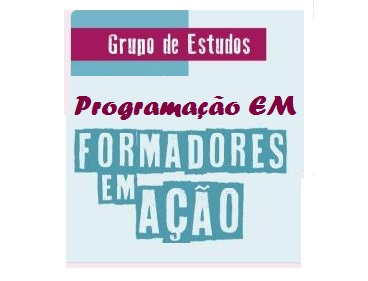

BEM-VINDOS AO NOSSO SITE DA TURMA DAS SEGUNDAS-FEIRAS DO FORMADORES EM AÇÃO
CONHEÇAM A NOSSA TURMA DE PROFESSORES DE PROGRAMAÇÃO "EM"

Começamos a nossa jornada juntos no 13 de junho de 2022.
Somos uma turma pequena e muito trabalhadora.
Sofremos juntos, aprendemos juntos, passamos perrengues juntos e também
nos divertimos juntos.
Os profesores que me acompanham toda segunda-feira nas reuniões
tem se tornado uma companhia da qual sentirei falta no futuro.
💜 NÓS SOMOS: 💜
- CHRISTIAN JUNIOR MAINARDES
- ELI BERTO DAMBROS
- EVERSON ACETI
- JORGE DE SOUZA FERREIRA
- LIANE MARIA DA SILVA
- MARGARETE VIRGINIA GONCALVES
- MARIA MAZUR
- NILO CESAR REICHEMBACH
- RAUL CASARIN MUNHOES
- VALCI SANDRA KRIK BOBATO
- MARIA FERNANDA CALVENTO

Nossas reuniões são das mais variadas. Sempre trabalhamos bastante os
conteúdos, mas não faltam bons papos e intercâmbios de experiências.
Compartilhamos dúvidas, dores, acertos, e muito mais...
Essa troca é fundamental para o crescimento de cada um de nós
como professor da disciplina, e da turma como uma equipe de trabalho
produtiva e agradável de se fazer parte.
Cada linha de código é uma vitória! Cada tag que funciona nos
deixa mais felizes que criança com sorvete!
Estamos na fase final das apresentações, aguardando ansiosos pelo
feedback dos colegas com as suas turmas. Muito mais que os 3 pontos
do curso, esperamos que essa jornada nos deixe novos saberes, experiências
e amigos para futuros cursos. E que venha a jornada III.